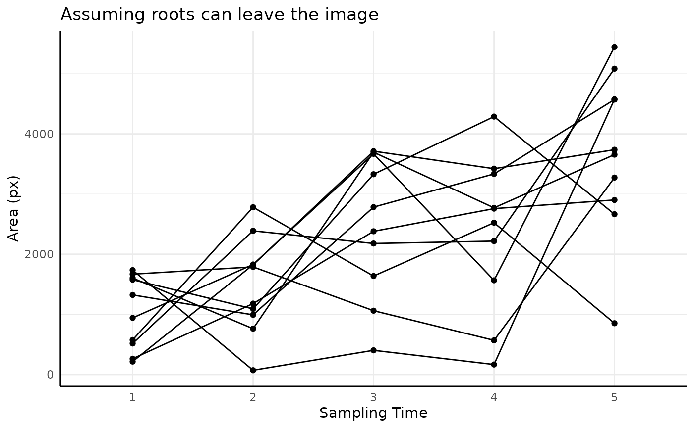
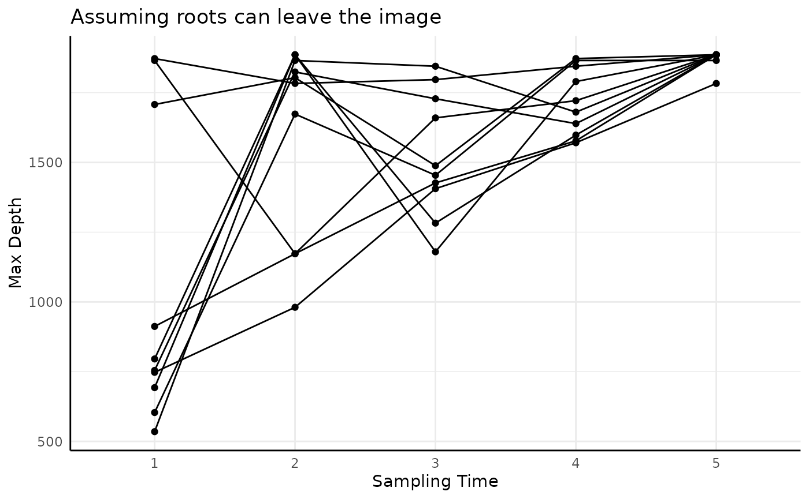
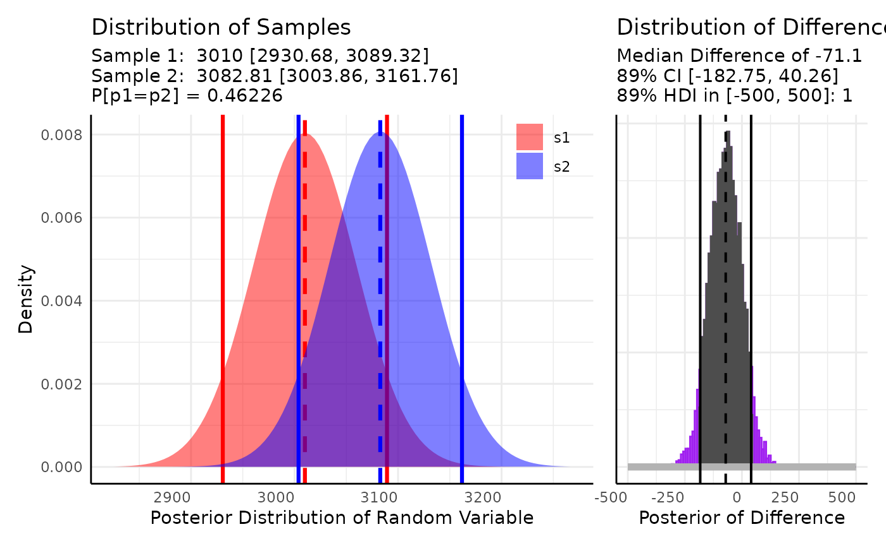
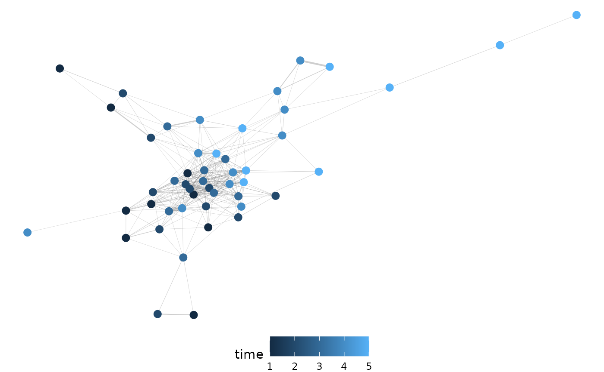

Root Traits
pcvr v0.1.0
Josh Sumner, DDPSC Data Science Core Facility
2024-04-22
Source:vignettes/roots.Rmd
roots.RmdRoot imaging data
Root imaging is an emerging application of PlantCV. Due
to the nature of available technologies for root imaging the output
tends to be noisy and there are a different set of phenotypes that may
be interesting for researchers. Fundamentally analysis should be very
similar for most phenotypes, but in the interest of providing an example
for root-focused researchers we will go over a few options for root data
output from PlantCV. For this vignette we will work with
simulated data based off of mini rhyzotron data collected from Fischer
farms in the Fall of 2023.
Simulating Minirhyzotron data
The data is simulated as a mixture between a Uniform background
distribution and N gaussian distributions where N follows a uniform
distribution and each gaussian is parameterized by mu and sigma. Mu also
follows a uniform distribution and sigma follows a half-normal
distribution. Pixels are assigned to the background or the gaussian
mixture component according to theta. Pixels assigned to the gaussian
mixture are randomly assigned to each of the N gaussian distributions.
See the rRhyzoDist function below. We also define functions
that will generate single value traits from the MV frequencies.
rRhyzoDist <- function(n, theta = 0.3, u1_max = 20, u2_max = 5500, sd = 200, abs_max = 5500) {
#* split n_pixels based on theta into background and gaussians
n_unif_pixels <- ceiling(n * theta)
n_gauss_pixels <- floor(n * (1 - theta))
#* background is uniform
background <- runif(n_unif_pixels, 0, u2_max)
#* simulate a number of gaussians randomly between 1 and u1_max
n_gaussians <- runif(1, 1, u1_max)
#* each gaussian has a mean that is uniform between 1 and u2_max
mu_is <- lapply(seq_len(n_gaussians), function(i) {
runif(1, 1, u2_max)
})
#* each gaussian has a sigma that is half-normal based on sd
sd_is <- lapply(seq_len(n_gaussians), function(i) {
extraDistr::rhnorm(1, sd)
})
#* assign pixels randomly to gaussians
index <- sample(seq_len(n_gaussians), size = n_gauss_pixels, replace = TRUE)
px_is <- lapply(seq_len(n_gaussians), function(i) {
sum(index == i)
})
#* draws n_pixels time from each gaussian
d <- unlist(lapply(seq_len(n_gaussians), function(i) {
rnorm(px_is[[i]], mu_is[[i]], sd_is[[i]])
}))
#* combine data
d <- c(d, background)
#* make sure no gaussians return data out of bounds
d[d < 0] <- runif(sum(d < 0), 0, abs_max)
d[d >= abs_max] <- runif(sum(d >= abs_max), 0, abs_max)
return(d)
}
lastNonZeroBin <- function(d) {
max(d[d$value > 0, "label"])
}
tubeAngleToDepth <- function(x, theta) {
sin(theta) * x
}
mv_mean <- function(d) {
weighted.mean(d$label, d$value)
}
mv_median <- function(d) {
median(rep(d$label, d$value))
}
mv_std <- function(d) {
sd(rep(d$label, d$value))
}
sv_from_mv <- function(df, theta) { # note this should also return mean/median/std
metaCols <- colnames(df)[-which(grepl("value|label|trait", colnames(df)))]
out <- aggregate(as.formula(paste0("value ~ ",
paste(metaCols, collapse = "+"))),
data = df, sum, na.rm = TRUE)
colnames(out)[ncol(out)] <- "area"
out$max_pixel <- unlist(lapply(split(df, interaction(df[, metaCols])), lastNonZeroBin))
out$height <- tubeAngleToDepth(out$max_pixel, 0.35)
out$mean_x_frequencies <- unlist(lapply(split(df, interaction(df[, metaCols])), mv_mean))
out$median_x_frequencies <- unlist(lapply(split(df, interaction(df[, metaCols])), mv_median))
out$std_x_frequencies <- unlist(lapply(split(df, interaction(df[, metaCols])), mv_std))
return(out)
}The simulated data looks realistic based on limited test data available at time of writing.
set.seed(123)
ex <- do.call(rbind, lapply(1:20, function(rep) {
n_total_pixels <- runif(1, 100, 3000)
x <- rRhyzoDist(n = n_total_pixels)
h <- hist(x, plot = FALSE, breaks = seq(0, 5500, 20))
breaks <- h$breaks[-1]
counts <- h$counts
data.frame(
rep = as.character(rep),
value = counts, label = breaks,
trait = "x_frequencies"
)
}))
pcv.joyplot(ex, "x_frequencies", group = c("rep"))For the rest of this vignette we will use simulated data. The first
simulated data df assumes that roots can appear and
disappear from the minirhyzotron images over time. The second simulated
data assumes that once a root is seen along the minirhyzotron that it
will stay visible.
n_times <- 5
parameters <- data.frame(
time = c(1:n_times),
n_min = rep(0, n_times),
n_max = seq(2000, 5500, length.out = n_times),
theta = rep(0.3, n_times),
u1_max = seq(10, 20, length.out = n_times),
u2_max = seq(2000, 5500, length.out = n_times),
u2_max_noise = seq(400, 200, length.out = n_times),
sd = seq(150, 250, length.out = n_times)
)
set.seed(123)
df <- do.call(rbind, lapply(seq_len(nrow(parameters)), function(time) {
pars <- parameters[parameters$time == time, ]
do.call(rbind, lapply(1:10, function(rep) {
n_total_pixels <- runif(1, pars$n_min, pars$n_max)
u2_max_iter <- ceiling(rnorm(1, pars$u2_max, pars$u2_max_noise))
x <- rRhyzoDist(
n = n_total_pixels, theta = pars$theta,
u1_max = pars$u1_max,
u2_max = u2_max_iter, sd = pars$sd
)
h <- hist(x, plot = FALSE, breaks = seq(0, 5500, 20))
breaks <- h$breaks[-1]
counts <- h$counts
data.frame(
rep = as.character(rep),
time = as.character(time),
value = counts, label = breaks,
trait = "x_frequencies"
)
}))
}))
df$rep <- factor(df$rep, levels = seq_along(unique(df$rep)), ordered = TRUE)
sv <- sv_from_mv(df)
n_times <- 5
parameters <- data.frame(
time = c(1:n_times),
n_min_new_px = rep(50, n_times),
n_max_new_px = seq(1000, 2500, length.out = n_times),
theta = rep(0.3, n_times),
u1_max = seq(10, 20, length.out = n_times),
mean_added_depth = seq(log(200), log(1200), length.out = n_times),
added_depth_noise = rep(0.1, n_times),
sd = seq(150, 250, length.out = n_times)
)
set.seed(567)
df2 <- do.call(rbind, lapply(1:10, function(rep) {
dList <- list()
add_area <- 2000
previous_max_depth <- 2000
d <- numeric(0)
for (time in seq_len(nrow(parameters))) {
pars <- parameters[parameters$time == time, ]
n_total_pixels <- add_area + runif(1, pars$n_min_new_px, pars$n_max_new_px)
max_depth <- ceiling(previous_max_depth + rlnorm(1, pars$mean_added_depth, pars$added_depth_noise))
x <- rRhyzoDist(
n = n_total_pixels, theta = pars$theta,
u1_max = pars$u1_max,
u2_max = max_depth, sd = pars$sd
)
d <- append(d, x)
h <- hist(d, plot = FALSE, breaks = seq(0, 5500, 20))
breaks <- h$breaks[-1]
counts <- h$counts
dList[[time]] <- data.frame(
rep = as.character(rep),
time = as.character(time),
value = counts, label = breaks,
trait = "x_frequencies"
)
add_area <- 0
previous_max_depth <- max_depth
}
do.call(rbind, dList)
}))
df2$rep <- factor(df2$rep, levels = seq_along(unique(df2$rep)), ordered = TRUE)
sv2 <- sv_from_mv(df2)Single Value Traits
If we assume that roots can only enter the minirhyzotron images then we would expect a positive trend over time for total root area.
ggplot(sv, aes(x = time, y = area, group = rep)) +
geom_point() +
geom_line() +
labs(x = "Sampling Time", y = "Area (px)", title = "Assuming roots can leave the image")
ggplot(sv2, aes(x = time, y = area, group = rep)) +
geom_point() +
geom_line() +
labs(x = "Sampling Time", y = "Area (px)", title = "Assuming roots can only enter the image")It would also make sense that the mean of the distribution would move deeper over time as roots have time to grow. This is likely to be true regardless of whether roots can leave the image.
ggplot(sv, aes(x = time, y = mean_x_frequencies, group = rep)) +
geom_point() +
geom_line() +
labs(x = "Sampling Time", y = "Mean Depth", title = "Assuming roots can leave the image")
ggplot(sv2, aes(x = time, y = mean_x_frequencies, group = rep)) +
geom_point() +
geom_line() +
labs(x = "Sampling Time", y = "Mean Depth", title = "Assuming roots can only enter the image")The same should be true for the median, although being more robust to outliers it may move more slowly.
ggplot(sv, aes(x = time, y = median_x_frequencies, group = rep)) +
geom_point() +
geom_line() +
labs(x = "Sampling Time", y = "Median Depth", title = "Assuming roots can leave the image")
ggplot(sv2, aes(x = time, y = median_x_frequencies, group = rep)) +
geom_point() +
geom_line() +
labs(x = "Sampling Time", y = "Median Depth", title = "Assuming roots can only enter the image")Finally, depth (height as returned by PlantCV) should
increase in both datasets over time but should be strictly monotone if
roots can only enter the images.
ggplot(sv, aes(x = time, y = height, group = rep)) +
geom_point() +
geom_line() +
labs(x = "Sampling Time", y = "Max Depth", title = "Assuming roots can leave the image")
ggplot(sv2, aes(x = time, y = height, group = rep)) +
geom_point() +
geom_line() +
labs(x = "Sampling Time", y = "Max Depth", title = "Assuming roots can only enter the image")Statistical Analysis
These data are likely to be noisier than above ground phenotypes but
the same general methods should be applicable. Here we will show a
simple example of longitudinal modeling using growthSS and
a pairwise comparison via conjugate but any methods in
other vignettes may be broadly reasonable.
Longitudinal Modeling
For the purposes of this example we combine the two datasets as though each is from one genotype where the roots exhibit different behavior in being able to leave the image vs not being able to leave the image and model the root area over time.
sv$geno <- "a"
sv2$geno <- "b"
ex <- rbind(sv, sv2)
ex$time <- as.numeric(ex$time)We fit a (perhaps overly) simple linear model to this data using the
nls backend. Other options include quantile modeling
(type = "nlrq"), frequentist mixed effect modeling
(type = "nlme"), General Additive modeling
(type = "mgcv"), and Bayesian hierarchical modeling
(type = "brms").
ss <- growthSS("int_linear", area ~ time | rep / geno, df = ex, type = "nls")## Individual is not used with type = 'nls'.
m1 <- fitGrowth(ss)Any models fit by fitGrowth can be visualized using
growthPlot.
growthPlot(m1, form = ss$pcvrForm, df = ss$df)
And non-brms models can be tested using
testGrowth. Note that brms::hypothesis is a
more flexible version of the third example of testGrowth
below.
We might test that the intercept (amount of roots visible at the first timepoint) is different:
testGrowth(ss, m1, test = "I")$anova## Analysis of Variance Table
##
## Model 1: area ~ I + A[geno] * time
## Model 2: area ~ I[geno] + A[geno] * time
## Res.Df Res.Sum Sq Df Sum Sq F value Pr(>F)
## 1 97 81858044
## 2 96 76177689 1 5680355 7.1584 0.008773 **
## ---
## Signif. codes: 0 '***' 0.001 '**' 0.01 '*' 0.05 '.' 0.1 ' ' 1That the effect of time is different:
testGrowth(ss, m1, test = "A")$anova## Analysis of Variance Table
##
## Model 1: area ~ I[geno] + A * time
## Model 2: area ~ I[geno] + A[geno] * time
## Res.Df Res.Sum Sq Df Sum Sq F value Pr(>F)
## 1 97 83399590
## 2 96 76177689 1 7221900 9.1011 0.00327 **
## ---
## Signif. codes: 0 '***' 0.001 '**' 0.01 '*' 0.05 '.' 0.1 ' ' 1Or more specific hypotheses on any coefficients such as the slope for
the first group being 10% higher than that of the second group (to
clarify groups you can always check the data returned by
growthSS):
table(ss$df$geno, ss$df$geno_numericLabel)##
## 1 2
## a 50 0
## b 0 50
testGrowth(ss, m1, test = "A1*1.1 - A2")## Form Estimate SE t-value p-value
## 1 A1*1.1 - A2 -318.448 132.4264 2.404718 0.01810283If you have a more nuanced hypothesis or want to model heteroskedasticity and autocorrelation then other backends as detailed in the intermediate growth modeling and advanced growth modeling tutorials may be of use.
Pairwise Comparisons
For non-longitudinal data/hypotheses any standard tests may be
useful. Here we’ll only show conjugate since it is a
departure from the norm.
The conjugate function makes pairwise Bayesian
comparisons using distributions for which there are conjugate prior
distributions that can be easily updated with observed data. This allows
for more direct hypothesis testing and Region of Practical Equivalence
(ROPE) testing.
Here we might use conjugate to compare to compare area
on the last day between our two “genotypes”. In this example we’ll use
the “T†distribution to run a Bayesian analog to a T-test.
s1 <- ex[ex$geno == "a" & ex$time == max(ex$time), "area"]
s2 <- ex[ex$geno == "b" & ex$time == max(ex$time), "area"]
conj_ex <- conjugate(
s1, s2, # specify data, here two samples
method = "t", # use the "T" distribution
priors = list(mu = 3000, n = 1, s2 = 1000), # prior distribution, here it is the same for both samples
plot = TRUE, # return a plot
rope_range = c(-500, 500), # differences of <500 pixels deemed not meaningful
rope_ci = 0.89, cred.int.level = 0.89, # default credible interval lengths
hypothesis = "equal", # hypothesis to test
support = NULL # optionally you can provide support, this is generally unnecessary.
)The conjugate output includes a summary, the posterior
distributions in the same format as the priors were supplied, and
optionally a plot.
The summary contains the HDE (highest density estimate) of each group’s posterior distribution, the HDI (highest density interval) of each group’s posterior distribution, the hypothesis that was tested, the posterior probability of that hypothesis, the HDE/HDI for the mean difference (if rope_range was specified), and the probability of the mean difference being within the rope_range.
conj_ex$summary## HDE_1 HDI_1_low HDI_1_high HDE_2 HDI_2_low HDI_2_high hyp post.prob
## 1 3614.727 2927.25 4302.205 6153.182 5385.898 6920.466 equal 0.01202173
## HDE_rope HDI_rope_low HDI_rope_high rope_prob
## 1 -2536.119 -3578.364 -1463.956 0The posterior is returned as a list with the same elements as the prior. This allows for Bayesian updating if you wish to do so.
do.call(rbind, conj_ex$posterior)## mu n s2
## [1,] 3614.727 11 1690217
## [2,] 6153.182 11 2105416The plot includes information from the summary graphically as a patchwork of 2 ggplots if rope_range was specified or is a single ggplot otherwise.
conj_ex$plot
Here we would conclude that the distributions are different since the probability that they are the same is roughly 1% and that the mean difference is biologically meaningful since the HDI of the mean difference falls entirely outside of our rope_range.
Multi Value Traits
The multi value traits returned by analyze_distribution
will often be more difficult to analyze than standard multi value traits
that describe spectral wavelengths or indices. The
conjugate function can use MV traits by specifying
matrices/data.frames for s1 and s2, but it will be very rare that a
minirhyzotron image’s distribution will follow an easily parameterized
pdf.
pcv.joyplot(df, "x_frequencies", group = c("rep", "time"))Theoretically we could consider this as a mixture of uniform and
gaussian distributions. A mixture of conjugate priors yields a mixture
of conjugate posteriors, but this is out of the current scope of
conjugate. Likewise, the complexity of a non-conjugate
mixture model applied to this data does not seem warranted.
The other general option in pcvr to analyze multi-value
traits is Earth-Mover’s Distance (EMD), which is a distance metric to
classify how much “work” it would take to turn one histogram into
another. This may be useful for minirhyzotron data depending on your
hypothesis.
Here we will show an ad-hoc option to compare the number of “peaks†in the data and an example of using EMD.
Numbers of Peaks
To compare the number of peaks we need a way to identify a peak. Here we do this with a quick function that finds intervals of counts above some cutoff for at least some duration.
getPeaks <- function(d = NULL, intensity = 20, duration = 3) {
binwidth <- as.numeric(unique(diff(d$label)))
if (length(binwidth) > 1) {
stop("label column should have constant bin size")
}
labels <- sort(d[d$value >= intensity, "label"])
r <- rle(diff(labels))
peaks <- sum(r$lengths[r$values == binwidth] >= duration)
return(peaks)
}
d <- split(df, interaction(df[, c("rep", "time")]))
peak_df <- data.frame(peaks = unlist(lapply(d, getPeaks)))
rownames(peak_df) <- NULL
peak_df$rep <- unlist(lapply(names(d), function(nm) {
strsplit(nm, "[.]")[[1]][[1]]
}))
peak_df$time <- unlist(lapply(names(d), function(nm) {
strsplit(nm, "[.]")[[1]][[2]]
}))
s1 <- peak_df[peak_df$time == min(peak_df$time), "peaks"]
s2 <- peak_df[peak_df$time == max(peak_df$time), "peaks"]
conj_ex2 <- conjugate(
s1, s2, # specify data, here two samples
method = "poisson", # use the Poisson distribution
priors = list(a = c(0.5, 0.5), b = c(0.5, 0.5)), # prior distributions for gamma on lambda
plot = TRUE, # return a plot
rope_range = c(-1, 1), # differences of <500 pixels deemed not meaningful
rope_ci = 0.89, cred.int.level = 0.89, # default credible interval lengths
hypothesis = "equal", # hypothesis to test
support = NULL # optionally you can provide support, this is generally unnecessary.
)
conj_ex2$summary## HDE_1 HDI_1_low HDI_1_high HDE_2 HDI_2_low HDI_2_high hyp post.prob
## 1 1.47619 1.006947 2.234277 2.904762 2.198332 3.900187 equal 0.1187409
## HDE_rope HDI_rope_low HDI_rope_high rope_prob
## 1 -1.421496 -2.42047 -0.3689384 0.2331199
do.call(rbind, conj_ex2$posterior)## a b
## [1,] 16.5 10.5
## [2,] 31.5 10.5
conj_ex2$plotEMD
Earth Mover’s Distance measures how much work it takes to turn one
histogram into another. Since multi- value traits are exported from
PlantCV as histograms this can be useful for color or
distribution analysis. In the following examples we make pairwise
comparisons of all our rows and return a long dataframe of those
distances. EMD can be computationally heavy with very large datasets
since all the pairwise distances have to be calculated. The
mvAg function may be useful if you need to summarize your
data to make EMD faster. If you are only interested in a change of the
mean then this is probably not the best way to use your data, but it is
a reasonable option for comparing whether groups are more or less
self-similar than other groups.
Here is a fast example of EMD. In this simulated data we have five
generating distributions. Normal, Log Normal, Bimodal, Trimodal, and
Uniform. We could use some gaussian mixtures to characterize the
multi-modal histograms but that will get clunky for comparing to the
unimodal or uniform distributions. The conjugate function
would not work here since these distributions do not share a common
parameterization. Instead, we can use EMD.
set.seed(123)
simFreqs <- function(vec, group) {
s1 <- hist(vec, breaks = seq(1, 181, 1), plot = FALSE)$counts
s1d <- as.data.frame(cbind(data.frame(group), matrix(s1, nrow = 1)))
colnames(s1d) <- c("group", paste0("sim_", 1:180))
s1d
}
sim_df <- rbind(
do.call(rbind, lapply(1:10, function(i) {
simFreqs(rnorm(200, 50, 10), group = "normal")
})),
do.call(rbind, lapply(1:10, function(i) {
simFreqs(rlnorm(200, log(30), 0.25), group = "lognormal")
})),
do.call(rbind, lapply(1:10, function(i) {
simFreqs(c(rlnorm(125, log(15), 0.25), rnorm(75, 75, 5)), group = "bimodal")
})),
do.call(rbind, lapply(1:10, function(i) {
simFreqs(c(rlnorm(100, log(15), 0.25), rnorm(50, 50, 5), rnorm(50, 90, 5)), group = "trimodal")
})),
do.call(rbind, lapply(1:10, function(i) {
simFreqs(runif(200, 1, 180), group = "uniform")
}))
)
sim_df_long <- as.data.frame(data.table::melt(data.table::as.data.table(sim_df), id.vars = "group"))
sim_df_long$bin <- as.numeric(sub("sim_", "", sim_df_long$variable))
ggplot(sim_df_long, aes(x = bin, y = value, fill = group), alpha = 0.25) +
geom_col(position = "identity", show.legend = FALSE) +
pcv_theme() +
facet_wrap(~group)
Our plots show very different distributions, so we get EMD between our images and see that we do have some trends shown in the resulting heatmap.
sim_emd <- pcv.emd(
df = sim_df, cols = "sim_", reorder = c("group"),
mat = FALSE, plot = TRUE, parallel = 1, raiseError = TRUE
)## Estimated time of calculation is roughly 3.1 seconds using 1 cores in parallel.
sim_emd$plotArranging these distances into a network of dissimilarities shows the different distributions clustering well.
Using our simulated mini-rhyzotron data we can go through the same steps. Here we will show this with both simulated datasets (roots leaving the image and roots being stuck in the image once observed).
First we check our distributions via joyplot.
pcv.joyplot(df, "x_frequencies", group = c("rep", "time"))We calculate EMD between our observations. Note here we have long input data as opposed to wide in the previous example.
df1_emd <- pcv.emd(
df = df, cols = "x_frequencies", reorder = c("rep", "time"),
id = c("rep", "time"),
mat = FALSE, plot = TRUE, parallel = 1, raiseError = FALSE
)And we arrange the distances as a network of dissimilarities. Here we are filtering for only those edges that are above the 75th percentile in strength and we see a pretty clear temporal clustering.

With our dataset that assumes roots cannot leave the image once observed we get similar results.
pcv.joyplot(df2, "x_frequencies", group = c("rep", "time"))
df2_emd <- pcv.emd(
df = df2, cols = "x_frequencies", reorder = c("rep", "time"),
id = c("rep", "time"),
mat = FALSE, plot = TRUE, parallel = 1, raiseError = FALSE
)
n2 <- pcv.net(df2_emd$data, filter = "0.75")
net.plot(n2, fill = "time")
Conclusion
Root imaging raises several potentially interesting problems around
having new phenotypes to consider and noisy data before and after
segmentation. It is always important to consider the generating process
for your data but that may be especially true where it comes to
minirhyzotron image data. Hopefully this vignette helps provide some
examples for how these data can be used, but if you have ideas or
questions please raise them in the pcvr github issues or in
the help-datascience slack channel for Danforth Center
users.